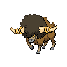
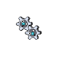
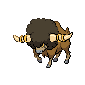
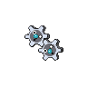

Sawsbuck's appearance changes depending on the season. During the spring, a tuft of cream fur appears on its chest, and its antlers are adorned with pink flowers. During the summer, its tail points up, it grows tufts of fur on the back of its head, and its antlers sport green leaves. During the fall, it sports a cream tuft of fur on its chest, and the leaves on its antlers are red and brown. During the winter, the cream fur turns white, tufts of white fur appear on its chest and lower limbs, and its antlers are coated in white.
Simipour is a simian Pokémon that is primarily blue. Its ears are broad with light blue insides, and it has oval eyes and a small black nose. There are several tufts of fur on its head, which resemble dreadlocks. These tufts can store water, which it collects with its tail. Simipour has a white marking around its neck that resembles a ruff; and a cream-colored face, hands, arms, legs, and feet. Its hands have five fingers, and its feet have three toes. Its tail is tipped with a blue plume, resembling a spout of water. This tail can shoot water at such high pressure that it can destroy a concrete wall. Simipour prefers to live near clean water.
Alomomola lives in the open seas. If it finds an injured Pokémon floating at sea, it will heal the Pokémon's wounds using its membrane and carry it back to shore. Alomomola does this because any predators coming for the injured Pokémon could also come for Alomomola. Alomomola swims alongside smaller Pokémon to accompany them; thus, many water Pokémon gather around it. Fishermen take Alomomola during long voyages, saving the need to have a doctor or medicine on ships.
Whimsicott can manipulate its body to pass through cracks, no matter how narrow. It takes advantage of this ability as a notorious prankster, moving things and leaving cotton balls behind. However, should it get wet, it will be too heavy to move and answer for its pranks. Despite weighing 14.6 lbs (6.6 kg), Whimsicott appears capable of "riding upon the wind" but whether this means they actually generate whirlwinds themselves or get carried by wind currents remains unclear. Whimsicott likes to spend time in the sunlight in order to grow its cotton, though it will tear off and scatter the cotton should it start to build up too much.
Bouffalant is a bovine Pokémon with a large, dark afro on its head. Two large, curving horns, each with two golden growths resembling rings, protrude from the afro. It has a shaggy brown hide that ends at its knees and does not cover its face. A large, gray nose sits at the end of its short, beige snout, and its yellow eyes are partly hidden by its hair. There are black tear markings directly below its eyes. Each of its beige legs has a single, gray hoof and its tail ends in a stubby tuft of fur.
Klink is a Pokémon resembling two interlocking gears with six teeth each. The teeth of the gears are light-gray, with a darker central region. Each gear has a white "X" in place of its left eye, while their right eyes have a black pupil and white sclerae. They have round turquoise noses and small mouths. Once two bodies have joined, they cannot combine with any others or they will become separated. Klink generates its life energy by spinning, and is generally found in caves.
Crustle is very strong, to the point that it can carry heavy rocks for a long time, even through arid lands where it resides. It fights members of its species over territory in battles which can become very vicious. If its shell breaks during such a fight, it loses. When Crustle's shell breaks, it will become weaker and unsure of itself. Crustle's biggest strength is its thick claws.
Braviary is extremely aggressive, but for noble reasons. It is known for its bravery and pride, and will fight fiercely to help and protect its friends. Even if it is injured or has its life threatened, it will still fight. The more scars it has on its front, the more respect it gets from its peers. Scars on its back will bring it ridicule, however. It has earned the nickname "the hero of the skies" due to its extreme dedication for its friends. Aiding its valiance, Braviary is extremely strong, capable of lifting a car and flying with it.
Gothorita uses starlight as the source of its power, and is able to use its psychic powers to arrange rocks into the shapes of constellations. It can also use these powers to control people and Pokémon with hypnosis, leading people astray and putting children to sleep before kidnapping them. Because of this, Gothorita is known as the Witch of Punishment. Some people believe Gothorita is from outer space, although this connection is yet to be confirmed.
Lampent can sense when someone is about to die, whom it visits and steals the spirit from the person's body. Though most often found in deep forests, it quietly wanders through cities and hangs around near hospitals to absorb the spirits of the fallen. It also pretends to be a lamp while in cities. Because of this, Lampent is feared as the emissary of death. It uses the spirits it has absorbed to fuel its fire
Scolipede lives in lush forests. It is very aggressive and will not give up until victorious. This Pokémon chases down enemies with great speed and then attacks relentlessly with its horns until it prevails. It latches onto the prey with the claw's toxic spikes and then slams it into the ground for the deadly poison effect.
Fraxure is very violent and territorial. Fights over turf often break out between it and another Fraxure. After a fight, it sharpens its tusks on river rocks, as they do not regenerate. It lives alongside rivers. Fraxure uses its tusks only when necessary. The reason is once its tusks break, Fraxure will be unable to use it again. Fraxure uses its tusks to cut the prey in two different food portions, one for eating now and the second portion for later.
 


